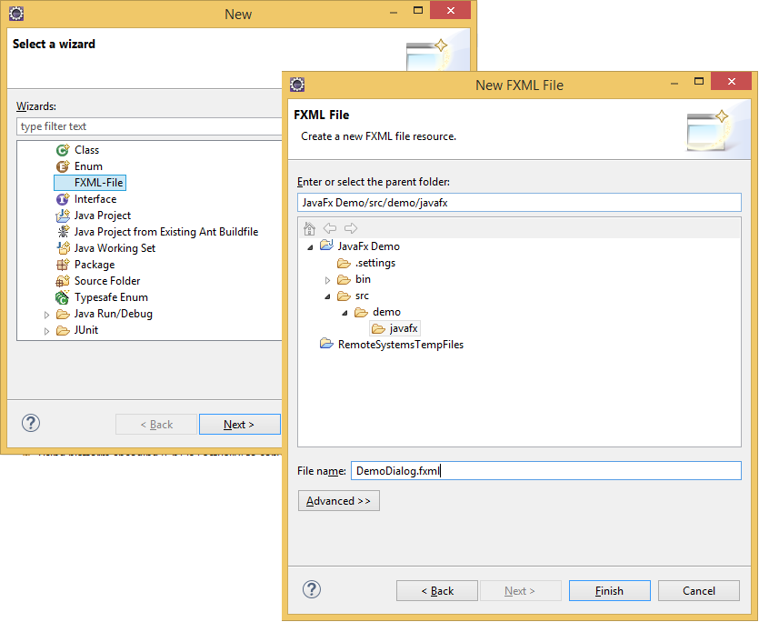
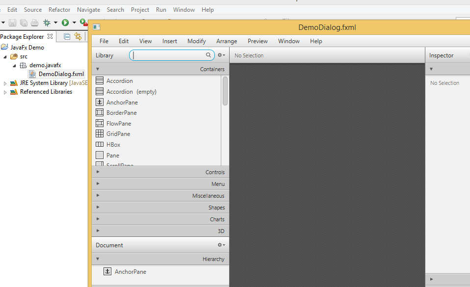

Welcome to eFX - Light
eFX - Light is a lightweight JavaFX plug-in for eclipse. This plug-in contains useful extentions to increase your productivity with Java FX. This plug-in does not contain a fully featured support for JavaFX in Eclipse. If you are looking for this, please visit e(fx)clipse. The goal of this plug-in is to support developers to reduce common tasks, which are needed to work on plain JavaFX.
eFX-Light is in a very early stage and should not be used for production.
I hope you will have fun with the plug-in. If you have cool ideas for improvments or extends, please write an issue on github.
Start using eFX-Light
Install the eFX-Light plug-in in your Eclipse.
Update Site: http://thomasfischl.github.io/efxlight/updatesite
eFX-Light in Action
This sections shows a quick feature overview.
Prepare Java Project
The Java project needs a dependency to the JavaFX runtime. The runtime is located in the JRE or JDK install directory.
Create New FXML File
Create a new FXML file in your java project.
If the JavaFX Scene Builder is installed on the machine, this program will be opened after the new file was created.
Create/Update the JavaFX Controller
Open the context menu on the FXML file in your project and click 'Update FX Controller'.
After the create/update process is finished, the controller class opens in a Java editor.
Preview
To get a quick preview of the JavaFx Screen open the context menu on the FXML file and click 'Preview'. This will open a new JavaFX window with the content of the file.